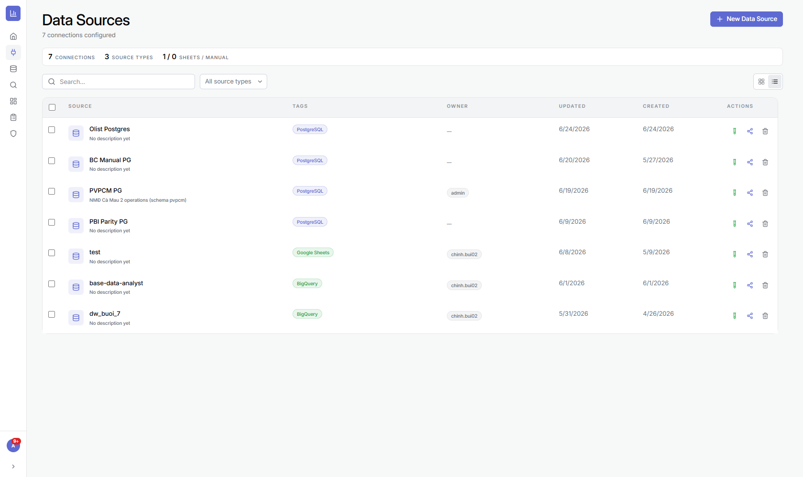
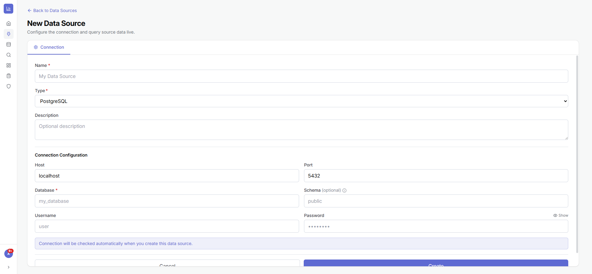
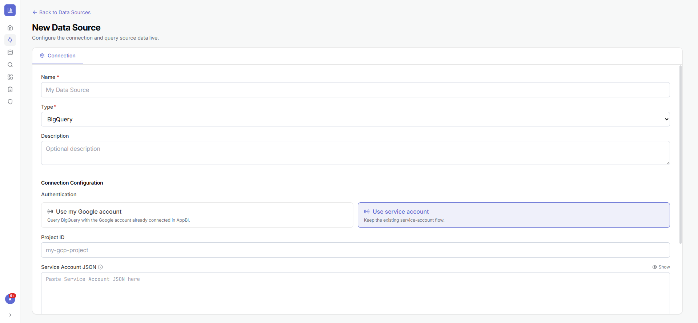
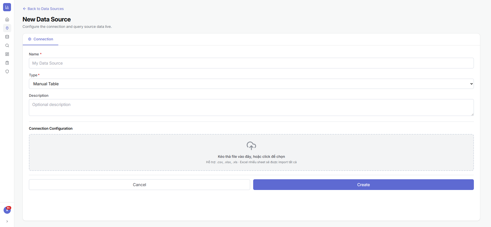
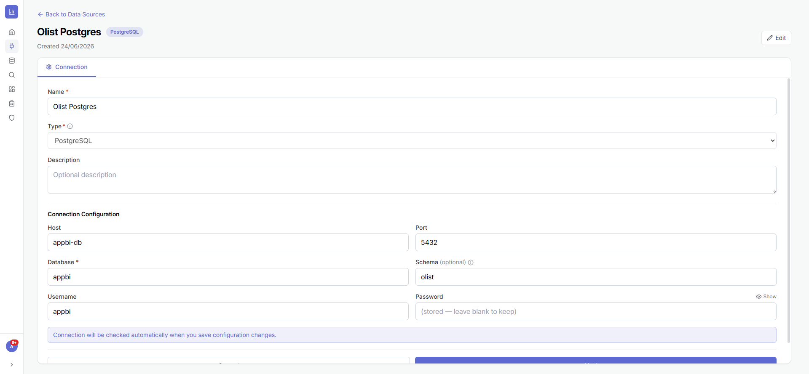

1.1Danh sách nguồn dữ liệu
Là gì: nơi quản lý mọi kết nối — thống kê, tìm kiếm, lọc theo loại/quyền/chủ sở hữu, xem dạng lưới hoặc bảng.
⚙ Cách làm
- Mở Data Sources ở thanh điều hướng trái.
- Dùng ô Search hoặc bộ lọc All source types để tìm nhanh nguồn.
- Trên mỗi dòng, dùng các nút Test connection, Share, Delete ở cột Actions.
Lưu ý: không xoá được nguồn đang được một Dataset sử dụng — hệ thống sẽ báo các Dataset phụ thuộc để bạn xử lý trước.

1.2Tạo nguồn mới & các loại nguồn
Là gì: AppBI hỗ trợ PostgreSQL, MySQL, BigQuery, Google Sheets và Manual Table (Excel/CSV). Kết nối được kiểm tra tự động khi lưu.
⚙ Cách làm
- Bấm New Data Source.
- Đặt Name và chọn Type (loại nguồn).
- Nhập cấu hình tương ứng:
- PostgreSQL/MySQL: host, port, database, schema, user, password.
- BigQuery: đăng nhập Google (OAuth) hoặc dán Service Account JSON.
- Google Sheets: kết nối Google rồi chọn spreadsheet/sheet.
- Manual Table: kéo-thả file
.csv/.xlsxvào vùng tải lên.
- Bấm Create — hệ thống tự test kết nối; nếu lỗi sẽ báo ngay.
Mẹo: với Manual Table, file Excel nhiều sheet sẽ được nạp tất cả các sheet thành nhiều bảng.



1.3Sửa cấu hình & kiểm tra kết nối
Là gì: cập nhật thông tin kết nối an toàn. Thông tin nhạy cảm (mật khẩu, khoá) được mã hoá; để trống nghĩa là giữ nguyên giá trị cũ.
⚙ Cách làm
- Bấm vào tên nguồn để mở chi tiết, rồi bấm Edit.
- Sửa các trường cần thiết (mật khẩu để trống nếu không đổi).
- Bấm Update/Save — kết nối được kiểm tra lại tự động.
- Hoặc bấm Test connection ở danh sách để kiểm tra mà không cần sửa.

🔗 Kết hợp với các module khác